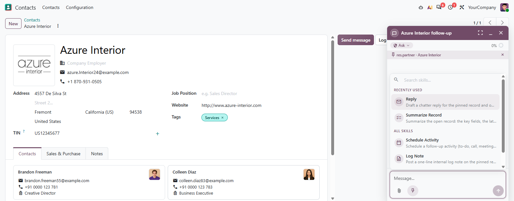
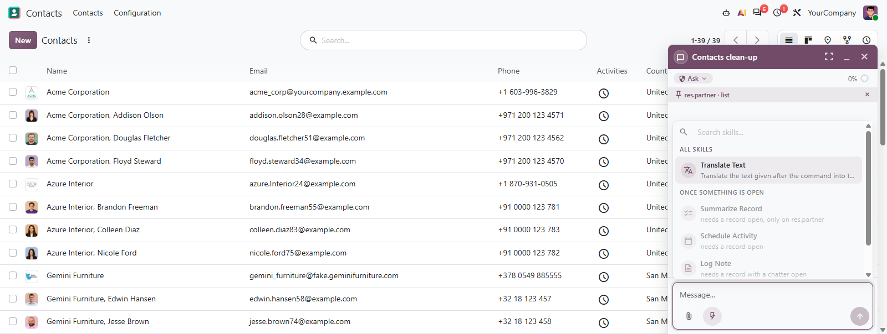
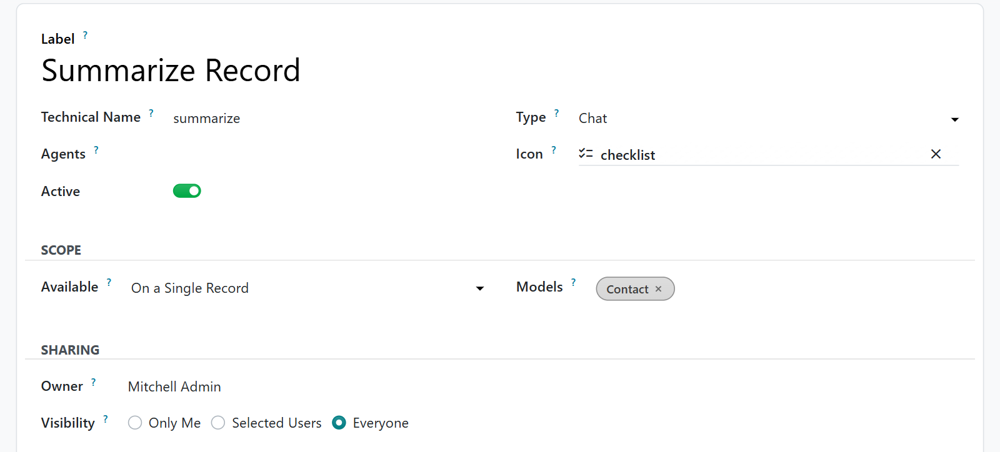
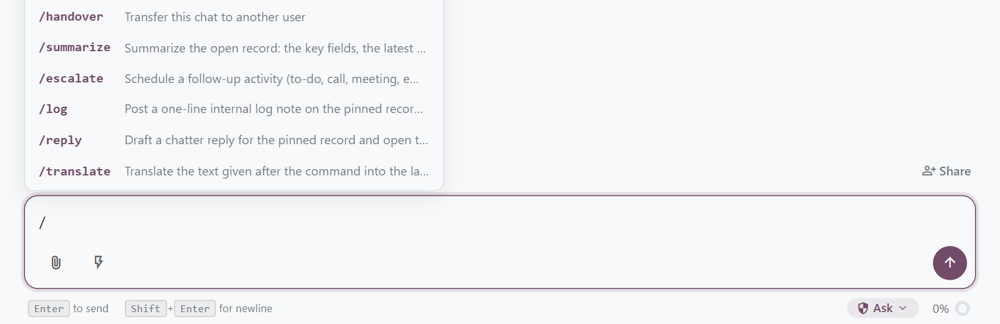

A skill is a named procedure for MuK AI Assistant: a line that tells the agent when to use it, the instructions it follows and the files it needs. The agent picks one when a request fits, and your users run it from the chat.
The agent knows every skill it may use and calls the one whose description matches the request.
The lightning button lists the skills, recently used first. Typing its name after a slash runs one from the keyboard.
A skill can need a record, a list or a chatter, and certain models. Anywhere else it is greyed out and refused.

Put the way your team drafts a reply, logs a call or chases a quote into a skill, and every chat follows it the same way, whoever asks.
Each skill's description is in the agent's instructions, so it runs the right one without being told its name.
The lightning button beside the paperclip opens a searchable list of skills, with the ones you used last on top.
Each skill is a slash command next to the built-in ones, and any text after its name goes along with it.
Attach a price list, a tone guide or a template. The agent reads a file only when the task calls for it.
Each change to the instructions is a revision under Body History, and an earlier one is a click away.
Keep a skill to yourself, share it with chosen colleagues or with everyone, and limit it to the agents it suits.
A skill can work anywhere, or need something open: a record or a list, a single record, or a record with a chatter. It can also be limited to the models it was written for.
The menu shows what the screen in front of you allows, and lists the rest under “Once something is open” with what each one needs. The server checks the same rule, so a skill run against nothing is refused.


Give the skill a label, a technical name and an icon, then one line that tells the agent when to use it. The body holds the steps in markdown, and the Resources tab the files it may read.
Only the owner and administrators can change a skill. Scheduled and automated chats see the skills of the user they run as.
A skill's body reaches the agent as plain text and is never run as a template, so a shared skill cannot execute anything on the server.
A slash in the chat lists the skills that fit the screen next to the built-in commands. Write the rest of the request after the name, such as /reply thank them for the quick delivery, and the agent takes it from there.
The module brings a reply skill that drafts a chatter message and opens the mail composer for you to review and send.

What you get for free, and what has to be paid work.
Issues and merge requests are welcome on the public repository. They are read — but no response time is promised.
A set of skills written for your team's procedures, or a fix on a deadline, is paid work — quoted up front. Write to sale@mukit.at.
LGPL-3. Use it, change it, ship it inside your own work — no licence key, no database count.
Modules written for your process, on your Odoo version.
Odoo joined up with the systems you already run.
Hosting, deployment and upgrades you do not have to watch.
Your team taught the parts of Odoo they actually use.
An agreement, so an answer does not depend on who is free.
Odoo.sh or on-premise, Community or Enterprise, and MuK AI Assistant with a provider set up.
Write and share skills under MuK AI › Skills, or from Manage AI Skills in the MuK AI settings.
Depends on muk_ai. Install it like any other module; the reply skill is there at once.
Ask the chat, and the agent picks a skill that fits; or open the lightning menu, or type a slash and the skill's name.
Skills are records, and an upgrade keeps them with their files, sharing and body history.
MuK IT GmbH, Vienna. Author and maintainer.
Tell us how your team works, and we will tell you which steps a skill can take over. MuK IT — Austrian Odoo partner, Vienna.